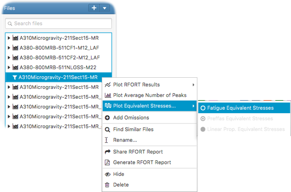

How to plot RFORT equivalent stresses
Once the RFORT analysis is complete, the fatigue, Preffas propagation and linear propagation equivalent stresses of each pilot point and each omission can be plotted by right clicking on the RFORT item in the file tree
and selecting - Plot Equivalent Stresses...
as follows;
